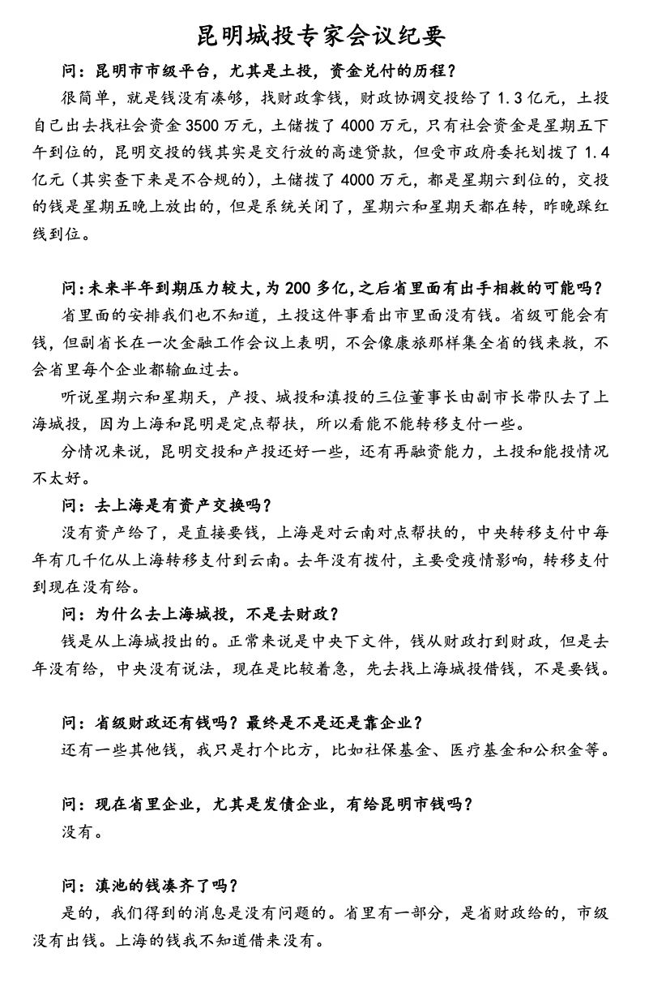
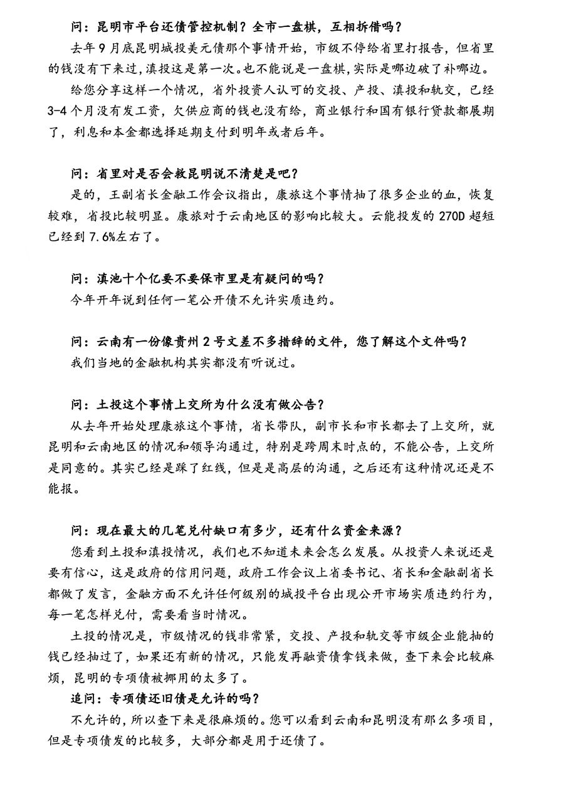
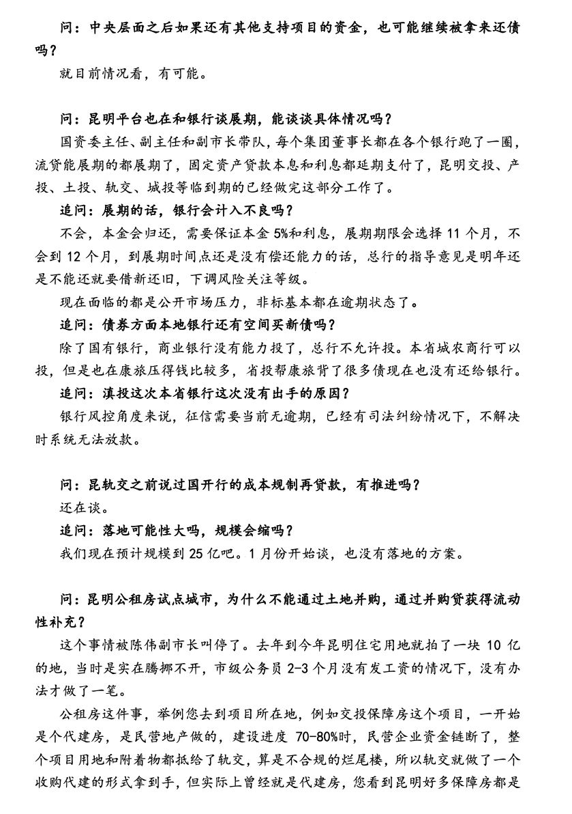
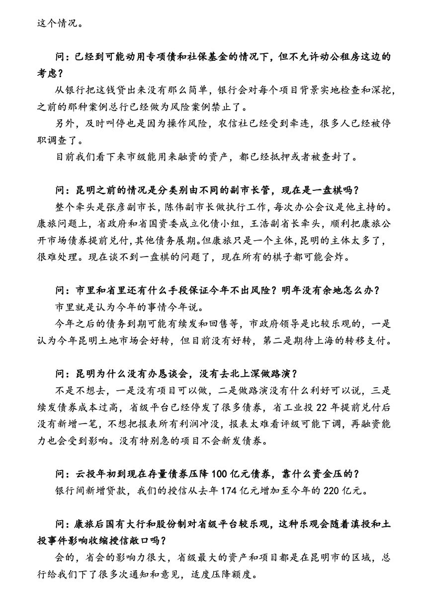
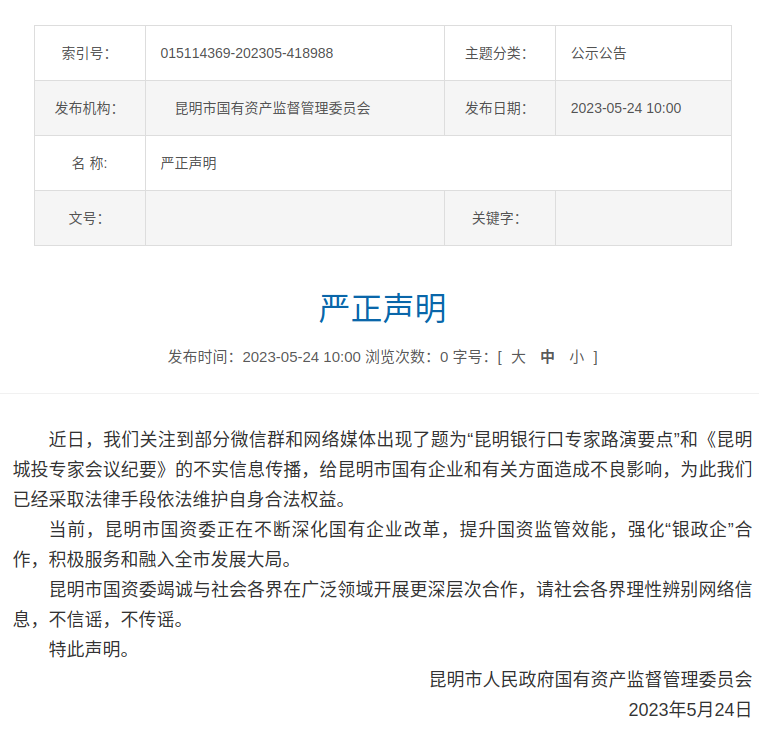
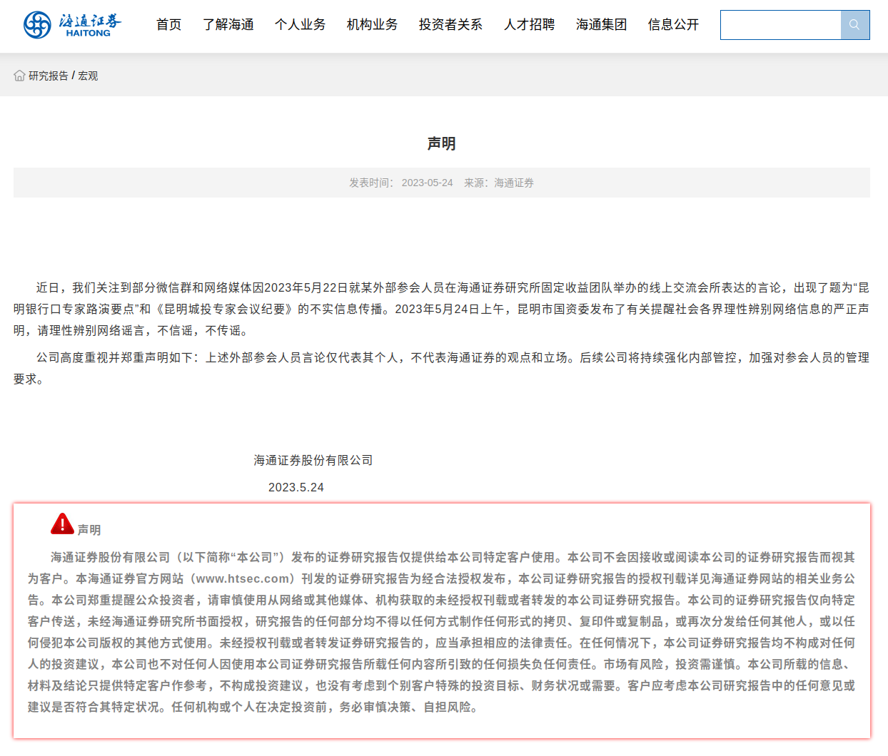
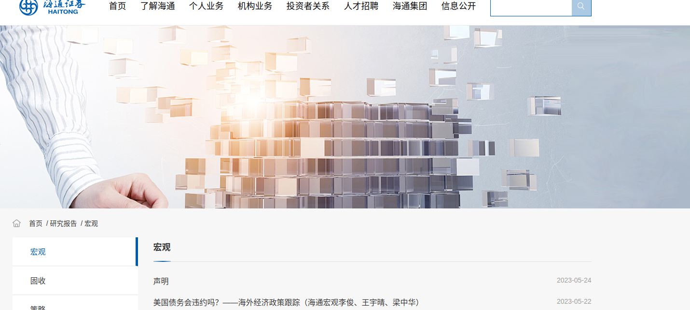

今年以来，关于城投债的负面消息不断暴露，先是贵州自我披露已无法正常还债，昨天又冒出了昆明城投超级大料，一时间飞速传播，关注度极高．
城投债存在很久了，过去就有经济学家分析过，预测存在风险，但由于其操作方式和信息披露都很不透明，民众也没法知道具体情况．这一次是赤裸裸将一些大家长期猜测但无法证实的东西暴露于公众面前．
24日，网上疯传一份《昆明城投专家会议纪要》，内容过于”真实震撼”．
|  |  |
|  |  |
从后续的申明来看，这个会议是海通证券组织，邀请民生银行昆明分行参与，与政府讨论如何处理城投债问题。从会议纪要中可以看到，云南地方债务(包括城投债)问题很严重，借了很多钱，还不了，没钱还。处理措施无非就是向上级要钱、贷款展期处理、借新还旧、挪用民生钱(医保、社保、公积金、公租房等)．．．
很快各方的应对反馈就来了,首先昆明市人民政府国有资产监督管理委员会在官网和微信公众号发布严正声明：

昆明银行口专家路演要点这份文件始终没找到，估计是”消灭”掉了。
海通证券通过官网发布紧急申明如下：

发布的地方一点都不显眼，居然是在这样的目录路径下：个人业务->研究报告->宏观，如果不是通过网传图片仔细搜索，根本就不可能找到，估计是迫于无奈，需要表态申明，但自己都知道难以让公众信服，所以放在一个毫不相干的小角落，不想让人看到。
海通证券申明入口：

民生银行的申明就更有意思了，官方网站上是找不到任何信息，基本都是这样的说法：据中国基金报，5月24日，民生银行昆明分行对此回应。据券商中国，5月24日，民生银行昆明分行对此回应。
互联网上出现了题为”昆明银行口专家路演要点“和《昆明城投专家会议纪要》的相关不实信息传播，涉及民生银行普通员工马某某。针对此情况，民生银行昆明分行高度关注并郑重声明如下：
一是据公安机关反馈情况，我行普通员工马某某在工作时间之外（2023年5月22日晚19:30-20:30)，以个人名义参加海通证券股份有限公司组织的外部会议，并在会上发表不实言论。
二是马某某参加此次活动从未经我行批准和授权，系员工个人行为。
三是我行对该员工的个人行为带来的负面影响表示谴责，并将按照实事求是的原则，按照国家法律法规及《中国民生银行员工违规违纪行为处分办法（2020年修订）》严肃从重处理。
四是我行将进一步加强员工教育，对工作时间外行为强化监测，杜绝此类事件发生。要求分行全行员工理性辨别网络信息，不信谣、不传谣。特此声明。
从各方申明和纪要内容看，会议纪要内容真实性还是比较高的，另外对城投债稍有关注了解的话，会议纪要中的内容实属可以猜测到的地方政府行为，但这样直白的展现在公众面前，特别是老百姓的民生工程(医保、社保、公积金、公租房等)中存在第三只手，对民众还是具有广泛而激烈的影响。
对城投债的简单说明：
历史起源
地方政府财权与事权存在不匹配，自1994年我国实行了分税制改革后，中央和地方的财政收支形成了严重的不平衡，中央财政收入占比50%以上，而中央财政支出占比仅有30%左右，分税制改革使得中央财政实力充盈，地方财政却是预算逐渐吃紧。
基础设施建设资金的需求旺盛，中国经济在过去20多年间实现了高速发展，这过程中基础设施建设对GDP的贡献率一直在不断攀升，一方面是因为经济发展需要道路交通等基础条件，另一方面是城镇化的发展也需要进行大量的城市基础设施建设，这就导致了地方政府面临着巨大的资金需求。
旧预算法禁止地方政府发债融资，1995年开始施行的旧预算法规定“除法律和国务院另有规定外，地方政府不得发行地方政府债券”，这一规定导致了地方政府无法进行直接融资。
一方面是基础设施建设的不断发展带来巨大的资金缺口，另一方面的财权的上收、债权的限制导致的地方政府没有资金来源，在这样的背景下，地方城投平台应运而生，城投平台承担了地方基础设施建设的融资、建设等职能，而城投平台直接融资发行的债券即是城投债。
发展历程
（一）初步发展阶段（2008年以前）
（二）快速发展阶段（2008-2009年）
（三）滞缓发展阶段（2010-2011年）
（四）井喷式发展阶段（2012-2014年）
（五）规范发展阶段（2015年至今）
城投债详细说明
一、城投债定义
一般是相对于产业债而言的，主要是用于城市基础设施等投资目的发行的。
城投债，又称“准市政债”，是地方投融资平台作为发行主体，公开发行企业债和中期票据，其主业多为地方基础设施建设或公益性项目。从承销商到投资者，参与债券发行环节的人，都将其视为是当地政府发债。
二、城投债发行主体
地方政府投融资平台公司，地方政府及其部门和机构通过财政拨款或注入土地、股权等资产设立，从事政府指定或委托的公益性或准公益性项目融资、投资、建设和运营，拥有法人资格的经济实体。
三、城投债审批部门
城投债主管部门：国家发改委
会签部门：中国证监会、中国人民银行
四、城投债发行的条件
1、股份有限公司的净资产不低于人民币3000万元，有限责任公司和其他类型企业的净资产不低于人民币6000万元；
2、企业发行的债券余额不得超过其净资产的40%；
3、全国财政收入百强县的县级及县级以上政府投融资平台公司；
4、最近三年可分配利润（净利润）足以支持企业债券一年的利息；（可建议市政府通过财政补贴等方式弥补发债主体前3年净利润）；
5、募集资金的投向符合国家产业政策和行业发展方向，所需相关手续齐全；
6、债券的利率由企业根据市场情况确定，但不得超过国务院限定的利率水平；
7、已发行的企业债券或其他债务未处于违约或者延迟支付利息的状态；
8、最近三年没有重大违法违规行为。
五、城投债的特点
（一）相对于发行人
1、融资规模大，期限长
企业债券的融资规模可以达到发行人净资产的40%。截至目前，单期企业债券的最大发行规模已达450亿元。企业债券属于中长期融资工具，一次发行中可以设置不同期限品种，能满足公司不同时段的资金需求。
2、成本低
企业债券是一种直接融资工具，省略了银行贷款的中间环节。
3、优化发债主体债务结构，降低长期筹资成本
从债务结构来看，银行贷款若成为发行人的主要筹资渠道，将造成发行人短期刚性债务余额较大，面临即期债务偿还压力。企业债券融资不仅能缓解短期偿还压力，同时还能降低长期筹资成本。
（二）相对于投资人
1、城投债信用风险较低
城投债由地方支持，与地方政府债券类似，城投债也是地方政府融资的一种方式，有一定的政府背景，信用风险较低。地方财政收入及债券所投项目产生的经营收益可以为本期债券提供充足的偿还保障。
2、收益具有吸引力
以近期发行的城投债为例，五年前AA+级城投债发行利率5.04%，比二级市场同等级企业债高出110基点。另外，多数债券利率具有期权特征，投资者具有回售权，发行者具有上调票面利率选择权，对投资者有较好的保护。
3、利率市场化
对地方政府而言，城投债既不违反现有法律法规，又绕开人大审批，筹集资金更加市场化，相对于5.94%（5年及以上）的贷款利率来说更加节省了融资成本。
六、成本与期限
1、年财务成本在3.5%-7.5%之间
2、期限在5-15年（一般5、7、10、15年）
七、募集资金投向要求
1、募集的资金投向符合国家产业政策；
2、用于固定资产投资项目的，原则上累计发行额不得超过该项目总投资额的60%；
3、用于收购产权的，累计发行额不得超过收购产权总投资额的60%；
4、用于调整债务结构的，企业应提供银行同意以债还贷的证明，不受该比例限制，但实际操作中投资项目是发改委审核的关键内容；
5、用于补充营运资金的，不超过发债总额的20%。
八、操作程序
1、约谈，确定发债意向、规划发行规模、资金用途；
2、签订财务顾问合同；
3、签订律师、会计师、评级、评估和券商等中介合同，合同履行，中介机构进场；
4、资料汇总；
5、发债企业向证监会、国家发改委递交全套资料；
6、发改委、证监会审核批准；
7、发债。
九、城投债发行
（一）承销方式
根据《证券法》，向不特定对象发行的证券票面总值超过5000万元的，需要组织承销团，由主承销商组织承销团。承销商承销企业债券，可以采取代销、余额包销或全额包销方式，承销方式由发行人和主承销商协商确定。
（二）企业债券发行方式
1、交易所系统网上面向社会公众投资者公开发行；
2、通过主承销商设置的发行网点面向持有A股证券账户的机构投资者协议发行；
3、承销团设置的营业网点向境内机构投资者公开发行；
4、跨交易所网上网下市场和银行间市场发行。
（三）发行范围及对象
1、交易系统网上发行：持有A股证券账户的自然人、法人、基金和其他投资者；
2、协议发行：持有A股证券账户的机构投资者；
3、承销团设置的营业网点公开发行：境内机构投资者。